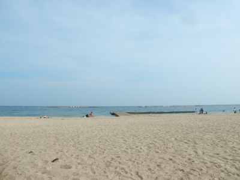

恩師を訪ねて
2017/11/11 Saturday



MEENA’s Diary
先日、小学校１,２年生の時の担任の先生のお宅に、
" 遊びにいらっしゃい " と ご招待を受けて、
当時の仲良し４人組で、遊びに行きました 。（いまでも仲良し）
2年生の頃、クラスの皆んなで 先生の畑に イチゴ摘みに行った以来です 。
車で近くまで行くと、" ここはどこ？" というくらい、街は乱開発され、
何の期待もなく 先生のお宅を探していたら、" あ ! ココだ " .
昔の面影残る 先生のお宅に到着 。
相変わらず先生は、畑を有機栽培で育て、先祖の土地を護り、
近所の川の水も 綺麗なままで、水車もあり、
タイムスリップしたかの様に、先生のお宅の周りは 昔の面影を残していました 。
退職をされた 今は、福祉で 犯罪を犯した人達の指導をされているようです 。
その人達のお話しも、" たいした事じゃないんだ " と、
愛をもって語られる先生 。
神話のお話しをしてくださったり、土地の歴史を話してくださったり、
アッという間に夕方に 。
帰りには、畑で獲れた 大きな大きな薩摩芋を お土産に頂きました 。
まだ 記憶もおぼろげな 幼い頃に、
優しい先生の愛に包まれて育った 私たちは、幸せものです 。
いろんな事があったけれど、幼い頃に戻って リセット したような、
ほのぼの 嬉しい、秋の１日でした 。
すべてに 感謝
✨
この夏に、先生を 卒業以来初めてお迎えしての 同窓会があったのだけれど、
悩みながらも、ヨーロッパへの旅行を選んでしまい、
お友だちに、先生にすごく会いたがってた ってお伝えして ってお願いしたら、
ご招待を受けました 。
夢のように 嬉しかった
気持ちを伝えるのって、大切ね